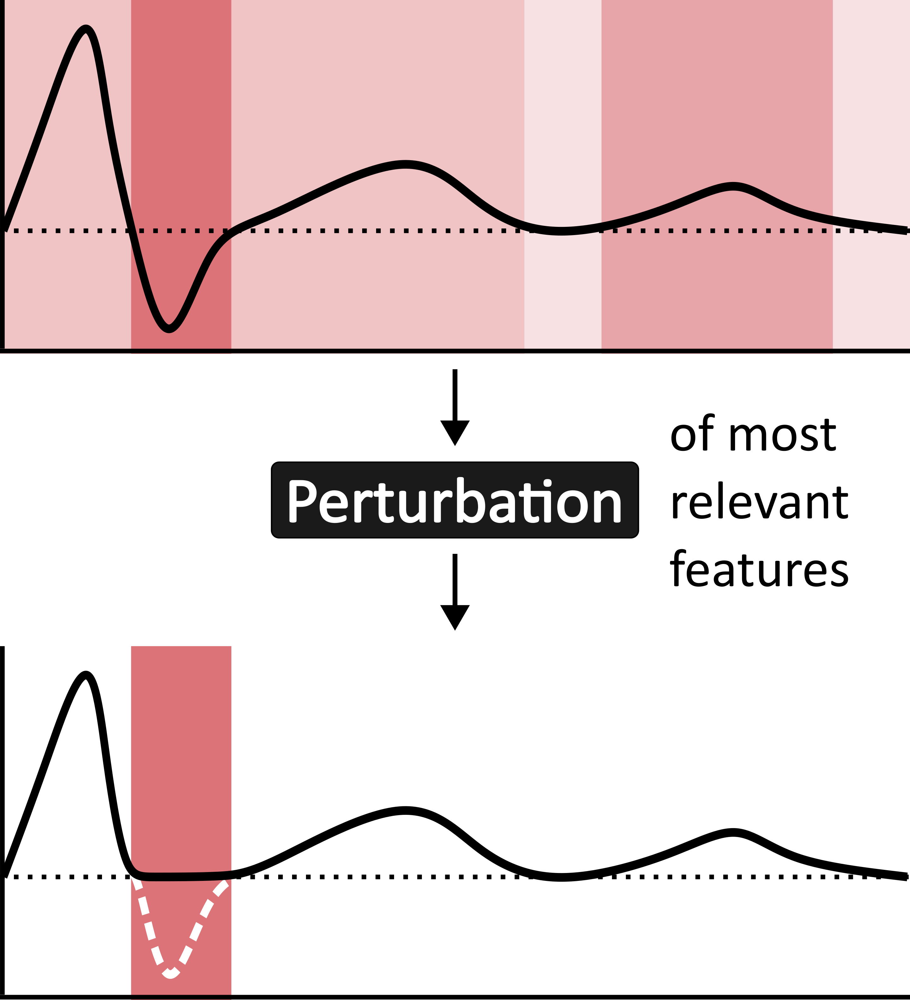

Class-dependent perturbation effects in evaluating time-series attributions
We evaluated feature attribution methods for time series classification across datasets, model architectures, and perturbation strategies. We found that the strongest perturbation strategies often showed the largest class differences.
This is troubling, as we don't know a priori what "good" perturbations are, or which classes are sensitive to them. Nor do we know whether explanations for the insensitive classes are actually bad, or whether the evaluation approach itself does not fit those classes.
Cite
Baer, G., Grau, I., Zhang, C., Van Gorp, P. (2025). Class-Dependent Perturbation Effects in Evaluating Time Series Attributions. In: Guidotti, R., Schmid, U., Longo, L. (eds) Explainable Artificial Intelligence. xAI 2025. Communications in Computer and Information Science, vol 2579. Springer, Cham. https://doi.org/10.1007/978-3-032-08330-2_14
